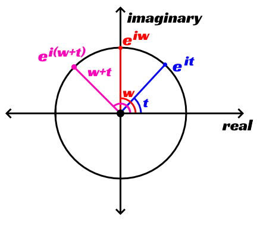

An Unnecessary Matrix Inverse Function
It's been one week minus a day since my last post and I said to myself that I need to write these every Monday, no matter what, so here I am. This week was relatively slow at the beginning, but I did a lot of work over the weekend. That doesn't mean the week was a complete loss though. Instead of writing code I was actually reviewing some math that I believe will become very useful in the near future.
Since the code I started Varkor with was for a project I didn't have the time to finish, I decided that one of the first things I would do is finish the goal of that project first. The initial goal of the project was to create my own implementation of quaternions. It's one of those things I have known about for a long time and I have some understanding of, but I haven't gone through the trouble of implementing them myself. I just use some EulerAngleToQuaternion type function and vice versa and everything usually works out. Creating my own implementation of them would really force me to have a much deeper unstanding of the math behind them and it would give me the opportunity to say that I have implemented my own quaternions. I think that's a pretty cool badge to have.
Some Complex Number Review
Quaternions are used for the easy computation of 3d rotations. Essentially, there is one vector that determines the axis to rotate around and an angle that determines how far to rotate around that axis. Complex numbers are used heavily for quaternions because they can very elegantly describe rotations, so the first thing I did was review some complex number math and most importantly, Euler's formula.
// Euler's formula
cos(t) + i * sin(t) = e^(i * t)
I want to add something to the website build system that allows me to render pretty math pictures (probably using LaTeX), but this will do for now. Either way, this formula is really cool because it says that using our one parameter t, we can specify any point on the unit circle. cos(t) is the real part and i * sin(t) is the imaginary part. If you don't know about this, seriously, take this formula, plug in a few values between 0 and 2pi in, put them on a graph where the real axis is the typical x axis and the imaginary axis is the typical y axis and you'll eventually start seeing the unit circle (the circle centered at the origin with a radius of one) as you plot points.
This formula comes with some extremely useful properties. For example, we can multiply two complex numbers and the result is really satisfying.
e^(i * t) * e^(i * w) = e^(i * (w + t));
This just means that multiplying two complex numbers together actually just describes rotating one complex number by a certain amount. If we start with a complex number whose angle between the vector [1, 0] and itself is t, and multiply it with another complex number whose angle between the same vector and itself is w, we get a new complex number whose angle is w + t.

I remember learning about this during my digital signal processing class in college and it was huge to me. It's just such a beautiful way to describe what seems like a simple operation. I'm surprised that it had never been mentioned anywhere else: not in any other classes during college or high school.
3D Camera
After doing that, I got eager to create a camera and since I am not on a deadline to create the quaternion implementation, I went right at it. The thing about having a camera that you can actually move around is how useful it is for debugging. It lets you view things from any perspective you want with some simple controls. I also wanted something I could actually interact with because it's always fun to have that.
To make the camera, I needed a world-to-camera transformation matrix. I intend on writing nearly all of my own math functions, so creating this was the first thing to do. I could go over the linear algrebra necessary to do this, but it would be quite a long explanation and I don't want to make this update unnecessarily long. It essentially comes down to this:
There is a matrix called the camera-to-world matrix. It describes how we move from camera space (or view space) to world space. learnopengl.com has this page that describes the different spaces. Unfortunately, we don't need a camera-to-world matrix, we need a world-to-camera matrix. We can find that matrix by just finding the inverse of the camera-to-world matrix though.
Finding the inverse of a matrix is one of those things that you'd think would be pretty straightforward and easy to accomplish, but it isn't. It's by no means terrible, but it's still a little bit of work. There are multiple ways to do it. You can use the determinant and the transpose of the cofactor matrix, you can use Gauss-Jordan elimination, and there are other methods too. I ended up implementing it with Gauss-Jordan elimination. Using this method, the square matrix is augmented by the identity matrix and row reduction is performed on the augmented matrix. After row reduction, the square matrix where the identity used to be will now be the inverse.
template<typename T, unsigned int N>
Matrix<T, N> Matrix<T, N>::Inverse() const
{
// We find the inverse using Gauss-Jordan elimination. That is, we augment
// the square matrix by the identity and perform row operations until the new
// N by 2N matrix is in reduced row echelon form. At this point the inverse
// matrix is what used to be the identity after the augmentation.
// These two matrices represent the N by 2N matrix together. We will
// perform the same row operations on both of these matrices.
Matrix<T, N> copy = *this;
Matrix<T, N> inverse;
inverse.Identity();
for (int pivot = 0; pivot < N; ++pivot)
{
// If the value of this pivot is zero, we need to swap the current pivot row
// with a row that has a value in current pivot column that is non zero.
if (copy[pivot][pivot] == 0)
{
bool still_invertible = false;
for (int row = pivot + 1; row < N; ++row)
{
if (copy[row][pivot] != (T)0)
{
copy.SwapRows(row, pivot);
inverse.SwapRows(row, pivot);
still_invertible = true;
break;
}
}
// If we can't find a non zero value below the pivot, the matrix is not
// invertible.
LogAbortIf(!still_invertible, "The matrix is not invertible.");
}
// We change the pivot to one and make all values below the pivot zero using
// row operations.
T row_factor = (T)1 / copy[pivot][pivot];
copy.MultiplyRow(pivot, row_factor);
inverse.MultiplyRow(pivot, row_factor);
for (int row = pivot + 1; row < N; ++row)
{
row_factor = copy[row][pivot] * (T)-1;
copy.AddRowMultiple(row, pivot, row_factor);
inverse.AddRowMultiple(row, pivot, row_factor);
}
}
// We now force all elements that are above pivots to be zeros using row
// operations.
for (int pivot = 1; pivot < N; ++pivot)
{
for (int row = pivot - 1; row >= 0; --row)
{
T row_factor = copy[row][pivot] * (T)-1;
copy.AddRowMultiple(row, pivot, row_factor);
inverse.AddRowMultiple(row, pivot, row_factor);
}
}
return inverse;
}
I would be interested in implementing this using some other methods to see the differences in performance, but I realized something after I did this: I actually didn't need it. Because we can make some assumptions about the camera and the affine camera-to-world matrix, finding the inverse is extremely easy and does not require doing this at all.
What it basically comes down to is this: we can calculate some orientation vectors for our camera depending on yaw and pitch. Using those orientation vectors and the position of the camera, we can create our inverse camera-to-world matrix.
void Camera::CalculateBasisVectors()
{
float horizontal_scale = cosf(_pitch);
_forward[0] = cosf(_yaw) * horizontal_scale;
_forward[1] = sinf(_pitch);
_forward[2] = sinf(_yaw) * horizontal_scale;
Vec3 global_up = {0.0f, 1.0f, 0.0f};
_right = Math::Cross(global_up, _forward);
_right = Math::Normalize(_right);
_up = Math::Cross(_forward, _right);
}
void Camera::CalculateWorldToCamera()
{
Vec3 back = -_forward;
Vec3 negative_position = -_position;
_wtc[0][0] = _right[0];
_wtc[0][1] = _right[1];
_wtc[0][2] = _right[2];
_wtc[0][3] = Math::Dot(negative_position, _right);
_wtc[1][0] = _up[0];
_wtc[1][1] = _up[1];
_wtc[1][2] = _up[2];
_wtc[1][3] = Math::Dot(negative_position, _up);
_wtc[2][0] = back[0];
_wtc[2][1] = back[1];
_wtc[2][2] = back[2];
_wtc[2][3] = Math::Dot(negative_position, back);
}
_forward, _up, _right, and back are the orientation vectors, but only the last three are used for creating the matrix. _position is just the location of the camera. _wtc is the world-to-camera matrix (the index operator is row major here). When I first tested my implementation, everything seemed fine except for when I looked nearly straight up or straight down.
The problem was that all of the orientation vectors needed to be normalized. This gif shows what happens when you don't normalize after Math::Cross(global_up, _forward).
It kinda makes sense too. As our forward vector gets closer to pointing straight down, the result of this cross product gets closer to a zero vector. Once it is pointing straight down, the result of the cross product will be the zero vector. This doesn't fully explain everything happening in the gif, but it does explain why the rotating cube seems to collapse in on itself as the camera is rotated down.
Wrapping Up
That's what happened this week. There's still a lot to do, but now that I have a camera, the next thing I am going to tackle before pursuing quaternions is debug drawing. I have already briefly started working on this, but there is still a lot of work left to do there. It will be very helpful now and in the future as I continue to beat my head against the wall when I have a seemingly impossible problem to solve.
In other news, piano practice is going well. I have almost transcribed all of the Hollow Knight theme song to score except for a few remaining bars. I can play the first eightish bars, but I need to practice it more and finish transcribing the rest of the song.
Also check out this sick fucking shot I scored a few days ago.